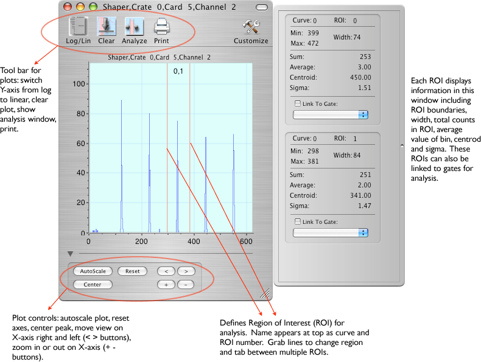
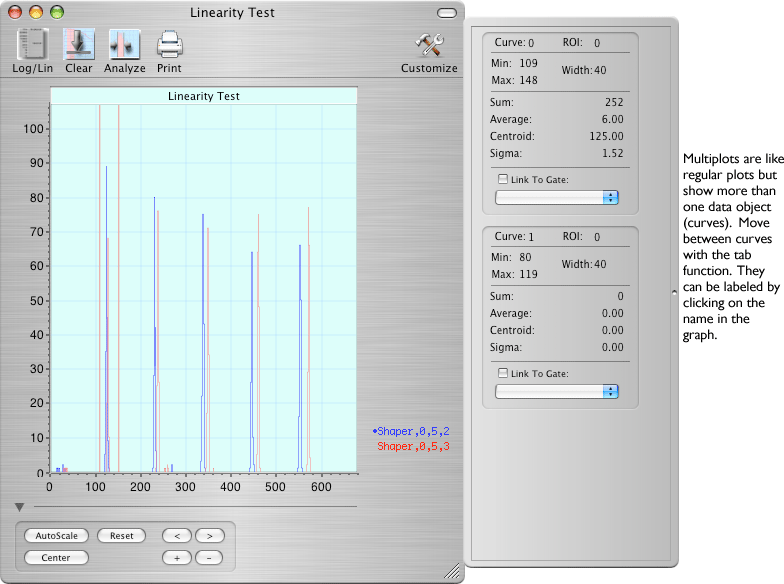

ORCA plots are opened by double-clicking items in the Data Monitor windows.


Keyboard commands for the plotter:
| Tab | Change focus to the next ROI or data set. Focus will cycle thru the current data set's ROIs, then continue to the next data set. |
| Shift-click | Creates a new ROI for the current data set at the mouse position. Will add another analysis panel. |
| Option-click | shrink the current ROI to 1 channel width and moves it to the mouse position. |
| Cmd - drag | Command dragging will move the ROI even if the width is so small that you can not select the ROI's center section for normal moving. |
| Delete | Removes the current ROI if there are more than one ROI regions defined. |
| left arrow | shift current ROI 1 channel left |
| right arrow | shift current ROI 1 channel right |